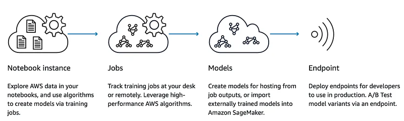

Amazon SageMaker
Yesterday, Andy Jassy announced a lot of new services during his re:Invent keynote. One of the most exciting ones is Amazon SageMaker, a fully-managed service that enables developers and data scientists to quickly and easily build, train, and deploy machine learning models at any scale.

I just recorded a 30-minute walkthrough, so let’s get to it. Plenty of code and examples for you to enjoy :)
Thank you for viewing. Build cool stuff and let me know!